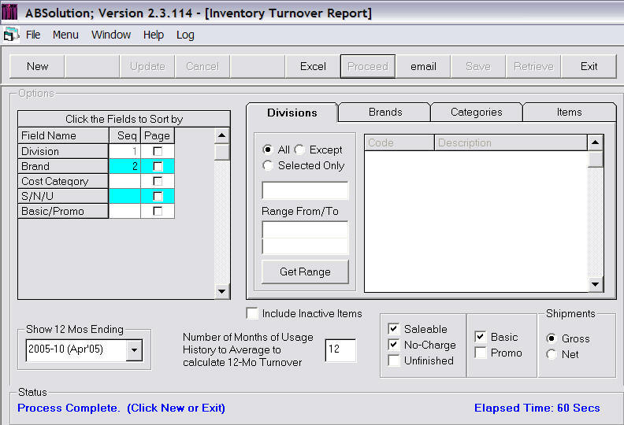

Produces a report showing the monthly turnover calculations for selected items.
This menu-item may be selected and run at any time. There is no update process associated with this function.
Please review the General Notes for Reports, for features which are common to all menu-driven reports.
Beginning-of-Month Unit on Hand and Sales Order Shipments History data are used to calculate Inventory Turnover. Since Inventory Turnover is a ratio that is calculated as of a point in time, the report will calculate the Inventory Turnover ratio for each of the 13 months ending on the Report Period specified, so that you can see trends in Inventory Turnover for an Item.
Please note that some of these columns may have modified definitions depending upon the values specified for some of the run-time options, described below.
Item Master & General
|
A |
Item | Item Code & Description (Item Master) |
|
B |
Standard Cost | The Item's Current Standard Cost (Item Master) |
Supply/Demand Metrics
|
C |
Average Months | The number of months that were actually used in the calculation of the Months of Supply. This number will be between 0 and the number of months (of history) selected at run-time. Months with 0's in either the Beginning on Hand or the number of Units Shipped are discarded. |
|
D |
Months of Supply | The beginning on hand (in units) for the last month shown on the report divided by the average number of units shipped per month. The average number of units shipped is the total number of units shipped in the number of months of history selected at run-time - however, months with 0's for beginning on hand or units are discarded (see Average Months, above). |
Inventory Turnover Statistics by Month, for each of the 13 Months ending on the Period Selected
|
E |
Beginning On Hand | The Beginning On Hand, in Units, for each month, in all warehouses combined excluding non-MRP warehouses. |
|
F |
Monthly Shipments | The total number of units shipped (Sales Order Shipments) for each month, in all warehouses combined. |
|
G |
Turnover | Annualized (12-month) Units Shipped divided by the Average Monthly (Beginning) Units on Hand, calculated for each month shown on the report. Note that depending on the number of months of history specified, you may not be able to calculate the Turnover Ratio yourself from the data shown on the report, as some months (especially the earlier months) will be using historical values that are not shown on the report. |
Sample Calculation of Turnover - for this example, let's say that you chose to use 3 months of history to calculate the Turnover, and the Beginning on Hand and Shipments history for a 6 month period is as follows:
|
Jan |
Feb | Mar | Apr | May | Jun | Jun |
|
Beg |
100 | 100 | 0 | 100 | 100 | 100 |
|
Shp |
10 | 20 | 10 | 20 | 10 | 20 |
The Calculation of the Turnover for the month if May would be:
12 * (Avg Sales for the 3 month period Mar thru May, discarding months with 0's) / (Avg Beg, same period)
12 * ((20 + 20) / 2) / ((100 + 100) / 2) = 12 * (20 / 100) = 2.4
Sample Calculation of Turnover - for this example, let's say that you chose to use 3 months of history to
There are no Report Totals or Sub-Totals, as this report shows individual Item Performance on a Unit Basis only.

A page 0 will print (before the report) which summarizes all of the Report Sorting, Filtering, and other run-time options selected. Some of the run-time options may be reflected in the heading area of the page.
|
|
Report Sorting |
You may sort the report by any of the following:
- Division
- Brand
- Cost Category
- S/N/U
- Basic/Promo
Please note that this report will always show Item as if it were the last entity sorted.
|
|
Report Filtering |
You may filter the report to include all, selected, or (all) except specific values of the following:
- Division
- Brand
- Cost Category
- S/N/U
- Basic/Promo
- Item Code
|
|
Number of Months of Usage History to Average to Calculate 12-Month Turnover |
Enter the number of months of shipment history to be used in the calculation of the Turnover Ratio. The default value is 12.
|
|
Include Inactive Items |
By default, the report will exclude Inactive Items. Check the box in order to include Inactive Items on the report. An Active Item is an Item with Item Status Code of "A" (in the Item Master File); an Inactive Item is an item which is not coded with an Item Status Code of "A".
|
|
Shipments (Gross/Net) |
Select whether to use Gross or Net shipments. Net shipments are Gross Shipments less Returns.
|
|
Report Period |
Select the Period which will define the end of the 12 month timeframe that the report will show Inventory Turnover data for. The default is the last period closed.